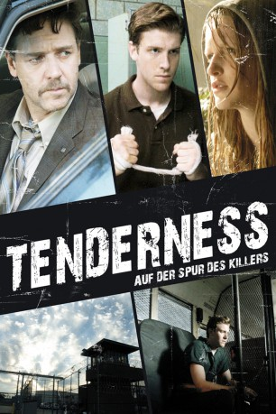

#6385 Tenderness - Auf der Spur des Killers
Alternativ: Tenderness
 
 IMDB-Wertung: 5.5 / 10
IMDB-Wertung: 5.5 / 10  Metascore: 0
Metascore: 0 
Detective Cristofuoro ist überzeugt: Eric Poole ist ein Killer. Er hat mehr als einmal getötet und er wird es wieder tun. Doch der 18jährige hat seine Jugendstrafe für den Mord an seinen Eltern abgesessen und wird entlassen. Still und geduldig heftet sich Cristofuoro an seine Fersen. Er wird ihn nicht mehr aus den Augen lassen. Und noch jemand hängt sich an Eric: Die Ausreißerin Lori hat den Fall verfolgt und schwärmt für den attraktiven Mörder. Für Cristofuoro bedeutet das höchste Alarmstufe, denn Eric liebt das Gefühl, wenn das Leben aus dem Körper eines Mädchens schwindet.
Jahr: 2009
Dauer: 100 Minuten
FSK: 16
Land: USA Studio: LionsgateTonspuren:
Untertitel: Deutsch,
Auflösung: 1080p (1920x816) Größe: 4485 MB
Genre: Thriller, Drama, Krimi
Regisseur:  John Polson
John Polson
Drehbuch: Emil Stern
Soundtrack:
Darsteller:
 Russell Crowe als Lt. Cristofuoro
Russell Crowe als Lt. Cristofuoro Jon Foster als Eric Poole
Jon Foster als Eric Poole- Sophie Traub als Lori
 Laura Dern als Aunt Teresa
Laura Dern als Aunt Teresa Alexis Dziena als Maria
Alexis Dziena als Maria- Arija Bareikis als Marsha
 Tim Hopper als Dan Komenko
Tim Hopper als Dan Komenko Tanya Clarke als Jackie Cristofuoro
Tanya Clarke als Jackie Cristofuoro Michael Kelly als Gary
Michael Kelly als Gary- Lee R. Sellars als Sam
 Saul Stein als Another Guard
Saul Stein als Another Guard- C.S. Lee als Asian Cop
- Scott Robertson als Highway Patrolman #2
- Brian McCormack als Local Cop at Restaurant
 Jane Fergus als TV Anchor
Jane Fergus als TV Anchor- David LaRosa als Paul
- Alicia Harding als Waitress
- Catherine Cox als Bowling Waitress
- Ben Rauch als Nice Guy
- Vincent Bagnall als Guard , uncredited
- Tiffany Browne-Tavarez als Diner Waitress , uncredited
- Kyle Fischbach als Prisoner , uncredited
 Dennis Jay Funny als Cook , uncredited
Dennis Jay Funny als Cook , uncredited- Lars Gerard als German Husband , uncredited
- John T. Kupres als Juvenile Delinquent , uncredited
- Jack Moran Jr. als Bowling Alley Employee , uncredited
- Keith Moyer als Amusement Park Dreg , uncredited
- Kenny Shapiro als News Reporter , uncredited
- Jake M. Smith als Spenser , uncredited
- Stewart Summers als TV News Reporter , uncredited
- Allison Carter Thomas als Diner Waitress , uncredited
 Ben Van Bergen als State Trooper , uncredited
Ben Van Bergen als State Trooper , uncredited- Jon Yvon als Prisoner , uncredited
- Vivienne Benesch als Lisa Komenko
- Brian Patrick Russell als Facility Director
- Lou Sumrall als Cafeteria Guard
- Matt Pepper als Ben
- Dan Fountain als Driver
- Randy Cherkas als Playland Cop
- Glenn Wein als Manager
- Wade Mylius als Brakeman
- Lauren Stewart als Young Lori
- Mark Havlis als State Trooper #3
- Darius Kaufman als Bag Piper 1
- Byrne O'Sullivan als Bag Piper 2
- Brian McGowan als Bag Piper 3
- Durant McCurley als Bag Piper 4
 Michael Ahl als Police Officer , uncredited
Michael Ahl als Police Officer , uncredited- Karina Colon als Juvenile Delinquent , uncredited
- Ingrid Johnson als Amusement Park Mom , uncredited
Datei: X:\2009(N-Z)\Tenderness - Auf der Spur des Killers (2009, FSK16, 1920x816).mkv seit 12.06.2017
Festplatte: HD 2009(G-Z)-2010(A-F)
 Es gibt insgesamt 99 Filme in der Gruppe '2009(N-Z)'
Es gibt insgesamt 99 Filme in der Gruppe '2009(N-Z)'